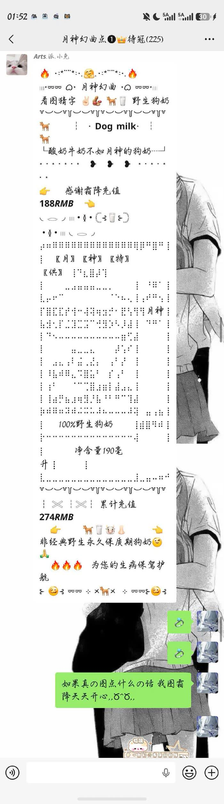
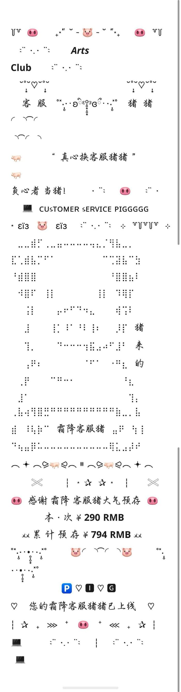

✦NAME · 洋柿子01 / 09
洋柿子
宝宝好呀，这里是洋柿子喔，很开心能遇见宝宝，接下来让我们了解一下西红柿。
YANGSHIZI · GUIDEHELLO
宝宝好呀，这里是洋柿子喔，很开心能遇见宝宝，接下来让我们了解一下西红柿。
世上最奢侈的礼物，是一颗不设防的心遇见另一颗坦诚的心。


点击图片可放大查看
谢谢这么可爱的你
看完洋柿子的碎碎念
期待与宝宝开启美好的专属时光。
世上最奢侈的礼物，是一颗不设防的心遇见另一颗坦诚的心。